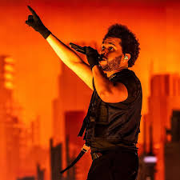

Cantor, compositor, ator e produtor musical

Abel sing's starboy (2022)
Abel Makkonen Tesfaye, mais conhecido por seu nome artístico the Weeknd, é um cantor, compositor, ator e produtor musical canadense. Conhecido por sua versatilidade sonora e lirismo sombrio, suas músicas exploram temas de escapismo, romance e melancolia, e é frequentemente inspirada em experiências pessoais.
BLINDINGS LIGHTS-737mi
SAVE YOUR TEARS-1,1bi
STARBOY-2,2bi